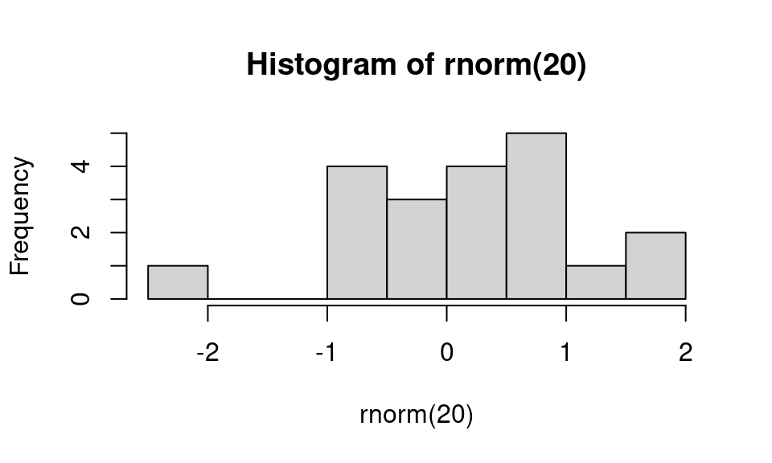

library(quarto); quarto_render('demo-Rmd.Rmd', 'html')
library(quarto); quarto_render('demo-Rmd.Rmd', 'pdf')
library(rmarkdown); render('demo-Rmd.Rmd', 'pdf_document')
library(rmarkdown); render('demo-Rmd.Rmd', 'html_document')
library(rmarkdown); render('demo-Rmd.Rmd', 'word_document')
library(knitr); knit2html('demo-Rmd.Rmd') An example R Markdown file
Illustrating use of R, bash, Python, and Julia code chunks
1 How to generate a document from this file
From within R, you can run the document through the either the rmarkdown or knitr package for R to generate an html file, or through the rmarkdown package to generate PDF or Word (the latter being useful at times but hopefully avoidable).
Or in RStudio, click on the ‘Knit’ pull-down menu and choose to knit to HTML, PDF, or Word (for R Markdown) or use the ‘Render’ button in more recent versions of RStudio.
Alternatively, from the UNIX command line, run one of these:
quarto render demo-Rmd.Rmd --to html # HTML
quarto render demo-Rmd.Rmd --to pdf # pdf
Rscript -e "library(rmarkdown); render('demo-Rmd.Rmd', 'pdf_document')" # PDF
Rscript -e "library(rmarkdown); render('demo-Rmd.Rmd', 'html_document')" # HTML
Rscript -e "library(rmarkdown); render('demo-Rmd.Rmd', 'word_document')" # Word
Rscript -e "library(knitr); knit2html('demo-Rmd.Rmd')" # HTML alternative2 Some basic Markdown formatting
Here’s an introduction to our critical discovery. Here we have some code to display inline but not evaluate: exp(7) and we can embed the code in a static code block as follows:
a = 7 %% 5
b = exp(a)This document will focus on embedding math and code and not on standard Markdown formatting. There are lots of sources of information on Markdown. RStudio has good information on R Markdown (including Markdown formatting).
For documents whose output format is HTML, you can use HTML formatting within your Markdown-based text.
3 Embedding equations using LaTeX
This can be done with the following syntax. Note that you can’t have a space after the initial $ for the inline equations.
Here is an inline equation \(f(x) = \int f(y, x) dy\).
Here’s a displayed equation
\[ f_\theta(x) = \int f_\theta(y, x) dy. \]
4 Embedding R code
Here’s an R code chunk
a <- c(7, 3)
mean(a)[1] 5b <- a + 3
mean(b)[1] 8Here’s another chunk:
mean(b)[1] 8When running R code, output is printed interspersed with the code, as one would generally want. Also, later chunks have access to result from earlier chunks (i.e., state is preserved between chunks).
Let’s make a plot:
hist(rnorm(20))
And here’s some inline R code: What is 3 plus 5? 8.
5 Controlling code chunk behavior
You have control over whether code in chunks is echoed into the document and evaluated using the include, echo, and eval tags.
Here we print the code but don’t evaluate it by setting eval to false.
cat("This code is not evaluated, but the code itself is printed in the document.")Here is the result of running the code in a chunk but not printing the code by setting eval to false.
This code is not printed in the document, but results of evaluating the code are printed.And here is a chunk that is evaluated, but neither the code nor the result of evaluating the code is printed in the rendered document. This is achieved by setting include to false.
Results of intensive calculations can be saved using the cache=TRUE tag so they don’t need to be rerun every time you compile the document.
a <- mean(rnorm(5e7))
a[1] 8.562798e-05You can use R variables to control the chunk options. Note that the variable myControlVar is defined in the first chunk of this document. Here it is used to turn off evaluation of the chunk code.
print("hi")An alternative, nice way to specify chunk options is within the chunk, like this:
cat("This code is printed in the document, but the code is not evaluated.")6 Embedding bash and Python code
6.1 bash
A bash chunk:
ls -l assets
df -h
cd /tmp
pwdtotal 99
drwxr-sr-x 2 paciorek scfstaff 3 Feb 25 14:37 css
drwxr-sr-x 6 paciorek scfstaff 6 Feb 25 14:37 fonts
drwxr-sr-x 2 paciorek scfstaff 3 Feb 25 14:37 img
drwxr-sr-x 2 paciorek scfstaff 3 Feb 25 14:37 js
-rw-r--r-- 1 paciorek scfstaff 92106 Feb 25 14:37 stat_bear.png
-rw-r--r-- 1 paciorek scfstaff 69 Feb 25 14:37 styles.css
Filesystem Size Used Avail Use% Mounted on
/dev/sda2 59G 32G 25G 57% /
tmpfs 16G 133M 16G 1% /dev/shm
tmpfs 3.2G 3.4M 3.2G 1% /run
tmpfs 5.0M 4.0K 5.0M 1% /run/lock
/dev/sdb1 111G 650M 105G 1% /tmp
/dev/sda1 499M 6.1M 493M 2% /boot/efi
/dev/sda3 59G 47G 9.3G 84% /var
/dev/sda5 2.6T 1.3T 1.2T 53% /var/tmp
oz.berkeley.edu:/pool0/accounts 67T 23T 45T 34% /accounts
tmpfs 3.2G 132K 3.2G 1% /run/user/3189
oz.berkeley.edu:/pool0/system 6.0T 4.9T 1.2T 81% /system
oz.berkeley.edu:/pool0/scratch 37T 35T 2.5T 94% /scratch
tmpfs 3.2G 32K 3.2G 1% /run/user/1463
/tmpUnfortunately, output from bash chunks occurs after all the code is printed and without any line spacing. Also, state is not preserved between chunks.
We can see that state is not preserved here, where the current working directory is NOT the directory that we changed to in the chunk above.
pwd # result would be /tmp if state were preserved /accounts/vis/paciorek/staff/tutorials/tutorial-dynamic-docsInline bash code won’t work: bash wc demo-Rmd.Rmd, unlike with R code.
6.2 Embedding Python code
You can embed Python code. As with R, state is preserved so later chunks can use objects from earlier chunks.
import numpy as np
x = np.array((3, 5, 7))
print(x.sum())15x.min() # this will print with more recent versions of rmarkdown 3try:
print(x[0])
except NameError:
print('state is not preserved: x does not exist')3There is no facility for inline Python code: python print(3+5)
6.3 Embedding Julia code
You can embed Julia code. As with R and Python, state is preserved so later chunks can use objects from earlier chunks.
x = [3, 5, 7];
x[2]5try
println("state is preserved if we see the value of `x[2]` next")
print(x[2])
catch
print("state is not preserved: x does not exist")
endstate is preserved if we see the value of `x[2]` next
5There is no facility for inline Julia code: julia print(3+5)
7 Reading code from an external file
It’s sometimes nice to draw code in from a separate file. Before invoking a chunk, we need to read the chunks from the source file, which contains the chunks tagged with some special formatting. Note that a good place for reading the source file via read_chunk() is in an initial setup chunk at the beginning of the document.
a <- 7
cat("a is ", a, ".\n", sep = "")a is 7.a <- 9
cat("Now, a is ", a, ".\n", sep = "")Now, a is 9.8 Formatting of long lines of code and of output
8.1 R code
Having long lines be nicely formatted and other aspects of formatting can be a challenge. Also, results can differ depending on your output format (e.g., PDF vs. HTML). In general the code in this section will often overflow the page width in PDF but not in HTML, but even in the HTML the line breaks may be awkwardly positioned.
Here are some examples that overflow in PDF output.
b <- "Statistics at UC Berkeley: We are a community engaged in research and education in probability and statistics. In addition to developing fundamental theory and methodology, we are actively"
## Statistics at UC Berkeley: We are a community engaged in research and education in probability and statistics. In addition to developing fundamental theory and methodology, we are actively
## This might work to give decent formatting in HTML but doesn't in PDF.
cat(b, fill = TRUE)Statistics at UC Berkeley: We are a community engaged in research and education in probability and statistics. In addition to developing fundamental theory and methodology, we are activelyvecWithALongName = rnorm(100)
a = length(mean(5 * vecWithALongName + vecWithALongName - exp(vecWithALongName) + vecWithALongName * vecWithALongName, na.rm = TRUE))
a = length(mean(5 * vecWithALongName + vecWithALongName)) # this is a comment that goes over the line by a good long ways
a = length(mean(5 * vecWithALongName + vecWithALongName - exp(vecWithALongName) + vecWithALongName, na.rm = TRUE)) # this is a comment that goes over the line by a good long long long long long long long long waysIn contrast, long output is usually fine, even in PDF.
rnorm(30) [1] 0.47485053 -0.53300834 -0.69385985 -1.30288852 -1.14076964 -1.04437702
[7] 0.51995461 0.15155954 0.55836893 -1.87940055 -0.99908618 -0.47083913
[13] 0.88461719 -2.47235000 1.55333948 1.41114869 1.91056609 -0.62932679
[19] 1.22380063 1.12960580 -0.84659648 -0.65229492 1.83760743 -1.32678114
[25] 0.50964439 -0.80747544 -0.03085863 -0.91200119 0.82473210 0.70518136Adding the tidy=TRUE chunk option and setting the width (as shown in the Rmd version of this document) can help with long comment lines or lines of code, but doesn’t help for some of the cases above.
## Long strings and long comments:
b <- "Statistics at UC Berkeley: We are a community engaged in research and education in probability and statistics. In addition to developing fundamental theory and methodology, we are actively"
## Statistics at UC Berkeley: We are a community engaged in research and
## education in probability and statistics. In addition to developing
## fundamental theory and methodology, we are actively
## This might work to give decent formatting in HTML but doesn't in PDF:
cat(b, fill = TRUE)Statistics at UC Berkeley: We are a community engaged in research and education in probability and statistics. In addition to developing fundamental theory and methodology, we are actively## Now consider long lines of code:
vecWithALongName <- rnorm(100)
a <- length(mean(5 * vecWithALongName + vecWithALongName - exp(vecWithALongName) +
vecWithALongName * vecWithALongName, na.rm = TRUE))
a <- length(mean(5 * vecWithALongName + vecWithALongName)) # this is a comment that goes over the line by a good long ways
a <- length(mean(5 * vecWithALongName + vecWithALongName - exp(vecWithALongName) +
vecWithALongName, na.rm = TRUE)) # this is a comment that goes over the line by a good long long long long long long long long waysTo address the problems seen above, sometimes you can format things manually for better results. You may need to tag the chunk with tidy=FALSE, but I have not done that here.
## Breaking up a string:
b <- "Statistics at UC Berkeley: We are a community engaged in research
and education in probability and statistics. In addition to developing
fundamental theory and methodology, we are actively"
## Breaking up a comment:
## Statistics at UC Berkeley: We are a community engaged in research and
## education in probability and statistics. In addition to developing
## fundamental theory and methodology, we are actively
## Breaking up code lines:
vecWithALongName = rnorm(100)
a <- length(mean(5 * vecWithALongName + vecWithALongName - exp(vecWithALongName) +
vecWithALongName * vecWithALongName, na.rm = TRUE))
a <- length(mean(5 * vecWithALongName + vecWithALongName)) # this is a comment that
## goes over the line by a good long ways
a <- length(mean(5 * vecWithALongName + vecWithALongName - exp(vecWithALongName) +
vecWithALongName, na.rm = TRUE)) # this is a comment that goes over the line
## by a good long long long long long long long long ways8.2 bash code
In bash, we have similar problems with lines overflowing in PDF output, but bash allows us to use a backslash to break lines of code. However that strategy doesn’t help with long lines of output.
echo "Statistics at UC Berkeley: We are a community engaged in research and education in probability and statistics. In addition to developing fundamental theory and methodology, we are actively" > tmp.txt
echo "Second try: Statistics at UC Berkeley: We are a community engaged \
in research and education in probability and statistics. In addition to \
developing fundamental theory and methodology, we are actively" \
>> tmp.txt
cat tmp.txtStatistics at UC Berkeley: We are a community engaged in research and education in probability and statistics. In addition to developing fundamental theory and methodology, we are actively
Second try: Statistics at UC Berkeley: We are a community engaged in research and education in probability and statistics. In addition to developing fundamental theory and methodology, we are activelyWe also have problems with long comments, so we would need to manually format them.
Here is a long comment line that overflows in PDF:
# asdl lkjsdf jklsdf kladfj jksfd alkfd klasdf klad kla lakjsdf aljdkfad kljafda kaljdf afdlkja lkajdfsa lajdfa adlfjaf jkladf afdlInstead manually break the comment into multiple lines:
# asdl lkjsdf jklsdf kladfj jksfd alkfd klasdf klad kla
# lakjsdf aljdkfad kljafda kaljdf afdlkja lkajdfsa lajdfa
# adlfjaf jkladf afdl8.3 Python code
In Python, there is similar trouble with lines overflowing in PDF output too.
# This overflows the page:
b = "asdl lkjsdf jklsdf kladfj jksfd alkfd klasdf klad kla lakjsdf aljdkfad kljafda kaljdf afdlkja lkajdfsa lajdfa adlfjaf jkladf afdl"
print(b)asdl lkjsdf jklsdf kladfj jksfd alkfd klasdf klad kla lakjsdf aljdkfad kljafda kaljdf afdlkja lkajdfsa lajdfa adlfjaf jkladf afdl# This code overflows the page:
zoo = {"lion": "Simba", "panda": None, "whale": "Moby", "numAnimals": 3, "bear": "Yogi", "killer whale": "shamu", "bunny:": "bugs"}
print(zoo){'lion': 'Simba', 'panda': None, 'whale': 'Moby', 'numAnimals': 3, 'bear': 'Yogi', 'killer whale': 'shamu', 'bunny:': 'bugs'}To fix the issue, we can manually break the code into multiple lines, but long output still overflows.
zoo = {"lion": "Simba", "panda": None, "whale": "Moby",
"numAnimals": 3, "bear": "Yogi", "killer whale": "shamu",
"bunny:": "bugs"}
print(zoo){'lion': 'Simba', 'panda': None, 'whale': 'Moby', 'numAnimals': 3, 'bear': 'Yogi', 'killer whale': 'shamu', 'bunny:': 'bugs'}Long comments overflow as well, but you can always manually break into multiple lines.
# asdl lkjsdf jklsdf kladfj jksfd alkfd klasdf klad kla lakjsdf aljdkfad kljafda kaljdf afdlkja lkajdfsa lajdfa adlfjaf jkladf afdl
# asdl lkjsdf jklsdf kladfj jksfd alkfd klasdf klad kla lakjsdf aljdkfad
# kljafda kaljdf afdlkja lkajdfsa lajdfa adlfjaf jkladf afdl9 References
We’ll just see how you use BibTeX style references. Banerjee et al. (2008) proposed a useful method. This was confirmed (Cressie and Johannesson 2008).
Note the indication of the refs.bib file in the initial lines of this document so that the bibliographic information for these citations can be found.
The list of references is placed at the end of the document. You’d presumably want a section header like this:
Literature cited
Banerjee, S., A. E. Gelfand, A. O. Finley, and H. Sang. 2008. “Gaussian Predictive Process Models for Large Spatial Data Sets.” Journal of the Royal Statistical Society B 70 (4): 825–48.
Cressie, N., and G. Johannesson. 2008. “Fixed Rank Kriging for Very Large Spatial Data Sets.” Journal of the Royal Statistical Society B 70 (1): 209–26.